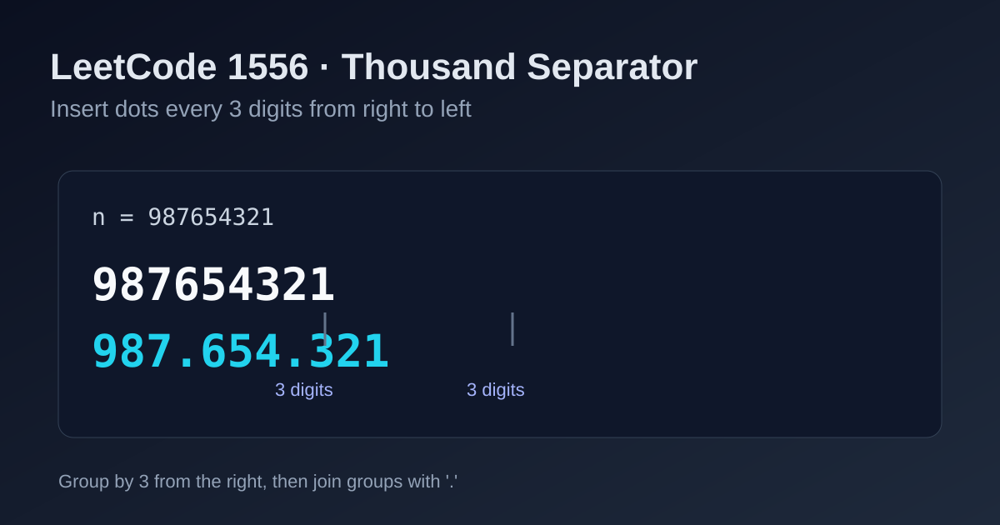

LeetCode 1556: Thousand Separator (Right-to-Left 3-Digit Grouping)
LeetCode 1556StringMathSimulationToday we solve LeetCode 1556 - Thousand Separator.
Source: https://leetcode.com/problems/thousand-separator/

English
Problem Summary
Given a non-negative integer n, return its string form with a dot (.) inserted every three digits from right to left.
Key Insight
The separator positions are easiest to manage from the least-significant side. Build the answer by scanning digits from right to left and insert a dot before every next 3-digit block.
Brute Force and Limitations
You can repeatedly take n % 1000 and format blocks, but mixing integer math and zero-padding can be error-prone. String traversal is cleaner for this problem.
Optimal Algorithm Steps
1) Convert n to string s.
2) Traverse s from right to left, append each digit to a builder.
3) After every 3 appended digits, if more digits remain, append '.'.
4) Reverse the builder and return it.
Complexity Analysis
Time: O(k), where k is digit count.
Space: O(k).
Common Pitfalls
- Adding a trailing dot at the front (e.g., .123).
- Forgetting that n = 0 should return "0".
- Grouping from left to right instead of right to left.
Reference Implementations (Java / Go / C++ / Python / JavaScript)
class Solution {
public String thousandSeparator(int n) {
String s = String.valueOf(n);
StringBuilder rev = new StringBuilder();
int cnt = 0;
for (int i = s.length() - 1; i >= 0; i--) {
rev.append(s.charAt(i));
cnt++;
if (cnt % 3 == 0 && i > 0) rev.append('.');
}
return rev.reverse().toString();
}
}func thousandSeparator(n int) string {
s := strconv.Itoa(n)
out := make([]byte, 0, len(s)+len(s)/3)
count := 0
for i := len(s) - 1; i >= 0; i-- {
out = append(out, s[i])
count++
if count%3 == 0 && i > 0 {
out = append(out, '.')
}
}
for l, r := 0, len(out)-1; l < r; l, r = l+1, r-1 {
out[l], out[r] = out[r], out[l]
}
return string(out)
}class Solution {
public:
string thousandSeparator(int n) {
string s = to_string(n), rev;
rev.reserve(s.size() + s.size() / 3);
int cnt = 0;
for (int i = (int)s.size() - 1; i >= 0; --i) {
rev.push_back(s[i]);
cnt++;
if (cnt % 3 == 0 && i > 0) rev.push_back('.');
}
reverse(rev.begin(), rev.end());
return rev;
}
};class Solution:
def thousandSeparator(self, n: int) -> str:
s = str(n)
out = []
count = 0
for i in range(len(s) - 1, -1, -1):
out.append(s[i])
count += 1
if count % 3 == 0 and i > 0:
out.append('.')
return ''.join(reversed(out))var thousandSeparator = function(n) {
const s = String(n);
const out = [];
let count = 0;
for (let i = s.length - 1; i >= 0; i--) {
out.push(s[i]);
count += 1;
if (count % 3 === 0 && i > 0) out.push('.');
}
return out.reverse().join('');
};中文
题目概述
给定一个非负整数 n，将其转换为字符串，并从右向左每三位插入一个点号 .。
核心思路
分组基准在最低位，所以从右往左遍历最自然。每处理 3 位数字，就在后续仍有数字时补一个分隔符。
暴力解法与不足
也可以用除以 1000 的方式分块再拼接，但会涉及前导零补齐等细节。直接按字符串扫描更直观、实现更稳定。
最优算法步骤
1）先把 n 转为字符串 s。
2）从右到左遍历 s，把字符追加到结果构造器。
3）每追加满 3 位，若左侧仍有字符，则再追加 '.'。
4）最后把构造器反转得到答案。
复杂度分析
时间复杂度：O(k)（k 为位数）。
空间复杂度：O(k)。
常见陷阱
- 最前面多加了一个点号。
- 忽略 n = 0 的场景（应返回 "0"）。
- 按从左到右分组导致位置错误。
多语言参考实现（Java / Go / C++ / Python / JavaScript）
class Solution {
public String thousandSeparator(int n) {
String s = String.valueOf(n);
StringBuilder rev = new StringBuilder();
int cnt = 0;
for (int i = s.length() - 1; i >= 0; i--) {
rev.append(s.charAt(i));
cnt++;
if (cnt % 3 == 0 && i > 0) rev.append('.');
}
return rev.reverse().toString();
}
}func thousandSeparator(n int) string {
s := strconv.Itoa(n)
out := make([]byte, 0, len(s)+len(s)/3)
count := 0
for i := len(s) - 1; i >= 0; i-- {
out = append(out, s[i])
count++
if count%3 == 0 && i > 0 {
out = append(out, '.')
}
}
for l, r := 0, len(out)-1; l < r; l, r = l+1, r-1 {
out[l], out[r] = out[r], out[l]
}
return string(out)
}class Solution {
public:
string thousandSeparator(int n) {
string s = to_string(n), rev;
rev.reserve(s.size() + s.size() / 3);
int cnt = 0;
for (int i = (int)s.size() - 1; i >= 0; --i) {
rev.push_back(s[i]);
cnt++;
if (cnt % 3 == 0 && i > 0) rev.push_back('.');
}
reverse(rev.begin(), rev.end());
return rev;
}
};class Solution:
def thousandSeparator(self, n: int) -> str:
s = str(n)
out = []
count = 0
for i in range(len(s) - 1, -1, -1):
out.append(s[i])
count += 1
if count % 3 == 0 and i > 0:
out.append('.')
return ''.join(reversed(out))var thousandSeparator = function(n) {
const s = String(n);
const out = [];
let count = 0;
for (let i = s.length - 1; i >= 0; i--) {
out.push(s[i]);
count += 1;
if (count % 3 === 0 && i > 0) out.push('.');
}
return out.reverse().join('');
};
Comments